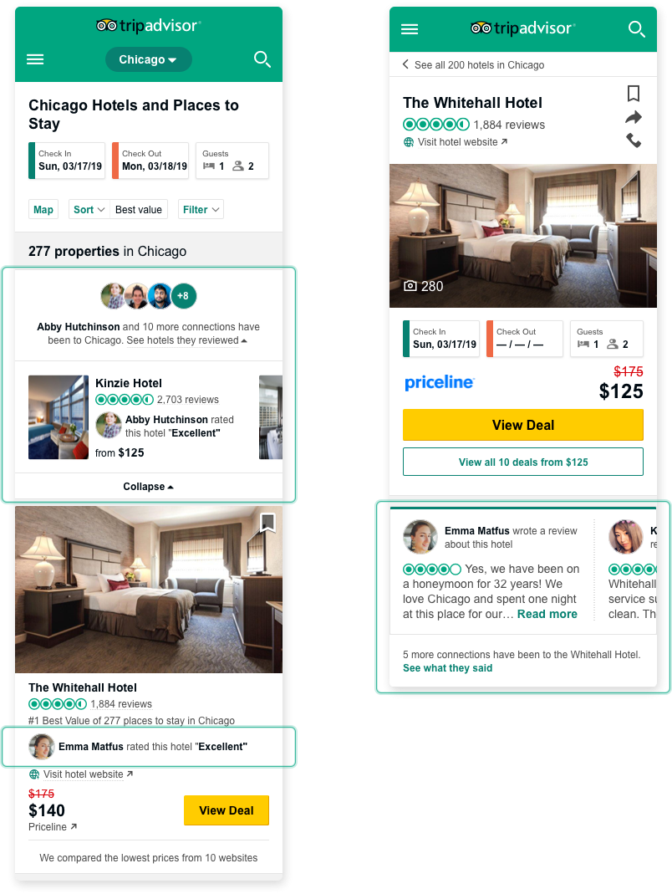
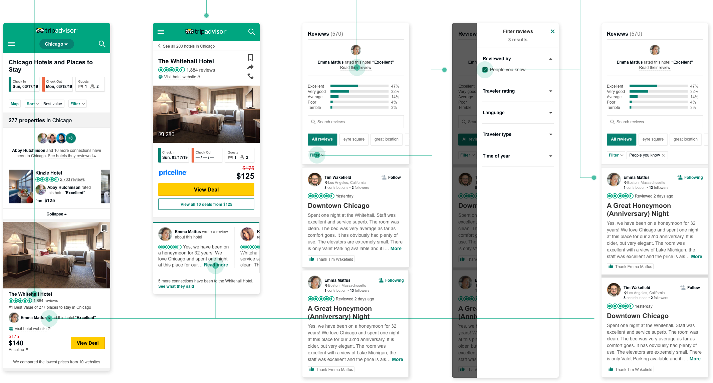

Media
Overview
Whether just beginning to plan a trip or looking for a quick bite to eat, photos offer a wealth of information. They can inspire and help us realize potential, keep us close to reality, and validate whether or not an experience is right for us. In short, seeing is believing. This project focuses on highlighting visual content to help travelers research and share their experiences.
I was the primary designer. Although I am on the hotels team, I worked closely with designers from other business units to ensure the features could scale. Also worked with UX research and PM.
• Increase in user delight
• Improved task ease of finding and validating a hotel
• Do no harm to revenue metrics
From the beginning we knew photos were important. To provide a roadmap for media, we began with user research to surface the importance of photos when searching for a hotel and how they satisfy traveler needs. Our high level takeaways:
• Validation:
o Users want to know if a hotel will be a good fit for them. They do this by looking at photos of the room, bathroom, lobby, exterior, and sometimes the amenities, restaurant, and surrounding area. Earlier in the research, hotel shoppers prefer to see high quality professional photos that showcase the hotel at its highest professional. However, when they are closer to booking, shoppers prefer to see photos from travelers for a more realistic view.
o Photos provide extra insight to the experience: So a lot of times when I look at hotels I look for specific things within the hotel. They don't generally advertise everything that is included in a room at every hotel. A lot of times it takes looking at photos of hotel rooms and things like that to actually see it.
• Navigation/Organization
o Some shoppers wanted a general overview of all areas in a hotel while others wanted to dive deeper into specific categories such as room, bathroom, and amenities such as pools. But regardless of the type of photos users wanted to see, they preferred to have lots of photos so long as they could easily find what they wanted without having to dig past irrelevant content.
• Photo Viewing UX
o Whether inside or outside of a photo viewer, users like to be able to swipe photos for quick and easy browsing. Sort order matters a lot here.
o The grid view provides users with a quick and easy way to browse photos and to look at what they think is relevant: “Definitely the grid because it gives me the opportunity to see more at once.”
o Detail views of photos should provide significant payoff. Extra details include a larger view, time stamp, caption, and photo source (user or professional).
From our research, we ran through a couple exercises to help focus our efforts. First we came up with user profiles:
• Scanning Suzy: quickly scans photos, likely only briefly flicking through the first 5-10 images
• Validator Val: leans heavily on reviews, then uses photos to validate what she has seen
• Skeptical Sam: does not trust photos by management, looks for ‘ugly’ pictures that show the ‘things a hotel doesn’t want you to see.’
Then we came up with questions that asked what would make our photo experience better.
Users enter TripAdvisor from a variety of places and we had to be cognizant that regardless of entry point, social content would be present and assistive. Although we would first introduce the social assistance features to hotel pages, social assistance was a theme that would persist across all business units. Therefore, strategies and designs required scalability.Elevating social content was a new theme. For it to be helpful for users, it needed to be easily discoverable in prevalent and contextual locations.


Quotes and Findings
Results. Quotes from Jeff Chow. New Media Coverage.